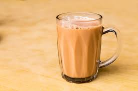
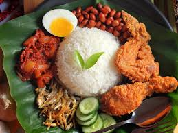
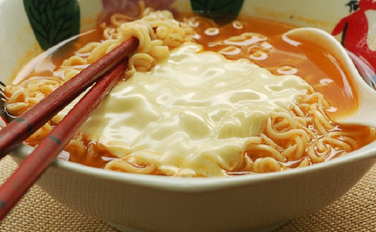
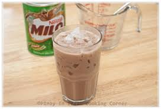

Menu
Signature
Roti Canai
Light flatbread served with dipping sauces of varying levels of spiciness.

Teh Tarik
Popular milk tea beverage in Malaysia, made from a strong brew of black tea with condensed milk.

Nasi Lemak
A fragrant rice dish cooked in coconut milk and pandan leaf, served with sambal.

Cendol
Iced dessert with coconut milk and palm sugar syrup, topped with green rice flour jelly and other toppings.

Nasi Goreng
Rice dish stir-fried with clilis, garlic, lime, egg, and other condiments.

Milo
Popular chocolate drink in Malaysia, mixed with condensed milk.
Food
Roti Canai
Nasi Lemak
Penang Asam Laksa
Laksa Johor
Nasi Goreng
Maggi Sup
Satay
Rojak
Penang Char Kuey Teow
Ketupat
Rendang Chicken
Hainanese Chicken Rice
Melaka Chicken Rice Ball
Sambal Chicken
Otak-otak
Sabah Tuaran Noodle
Sarawak Kolo Mee
Banana Leaf Rice
Ikan Bakar
Popiah
Beverage
Milo
Teh Tarik
Ipoh White Coffee
Apple Juice
Orange Juice
Klebang Coconut Milkshake
Chocolate
Green Tea
Latte
Cappuccino
Mocha
Espresso
Earl Grey
Coke
Sprite
Lemon Tea
Sky Juice
Dessert
Ais Kacang
Cendol
Kaya Toast
Chocolate Cake
Cheesecake
Cream Pie
Vanilla Ice Cream
Nyonya Kuih
Creme Crepe
Waffle